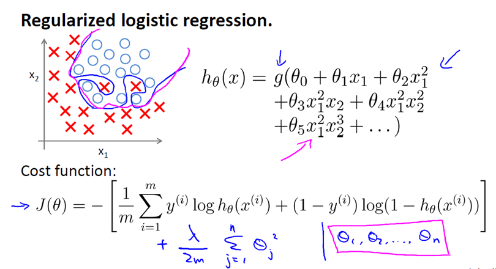

这里记录了视频第七节的内容，主要关于正则化的问题
欠拟合(under fitting)和过拟合(over fitting)
现在已经学习了一些不同的机器学习算法，包括线性回归和逻辑回归，它们能够有效的解决许多问题，但是将它们应用到某些特定的机器学习中时，就会出现欠拟合或者过拟合的问题，导致效果很差，通过正则化的方法可以改善算法，下面介绍什么是过拟合与欠拟合。
继续用线性回归预测房价的例子：
- 首先看第一幅图，使用一条直线函数来拟合数据，很显然随着房子面积的增大，房屋价格的变化越稳定或者说是越像右越趋于平滑，因此线性回归并没有很好拟合训练数据。
==我们把此类情况称为欠拟合(underfitting)，或者叫作叫做高偏差(bias)。==
这两种说法大致相似，都表示没有很好地拟合训练数据。高偏差这个词是 machine learning 的研究初期传下来的一个专业名词，具体到这个问题，意思就是说如果用线性回归这个算法去拟合训练数据，那么该算法实际上会产生一个非常大的偏差或者说存在一个很强的偏见。
- 在第二幅图我们用了一个二次函数去拟合数据，可以拟合出一条合理的曲线，事实证明这是一个很好的拟合效果。
- 第三幅图，在这里我们有五个训练数据，所以使用了五个参数θ0到θ4的一个四次多项式去拟合数据，它似乎是一个很好的拟合，因为它成功的通过了我们的所有训练数据，但是它非常的扭曲，在上下波动，所以事实上我们并不认为它是一个预测房价的好模型。
==我们把这类情况叫做过拟合(overfitting)，也叫高方差(variance)。==
与高偏差一样，高方差同样也是一个历史上的叫法。从第一印象上来说，如果我们拟合一个高阶多项式，那么这个函数能很好的拟合训练集（能拟合几乎所有的训练数据），但这也就面临函数可能太过庞大的问题，变量太多。
==同时如果我们没有足够的数据集（训练集）去约束这个变量过多的模型，那么就会发生过拟合。==1
2为什么足够多的多项式可以完美的拟合数据？
泰勒公式展开式。
概括的说，过拟合将会发生在变量（特征）过多的时候，这时候训练出的方程总能够很好的拟合训练数据，我们的代价函数无限趋于0或者就是0，但是这样千方百计拟合训练数据的曲线无法泛化到新的样本数据中，以至于无法预测新的样本价格。术语泛化指的是一个假设模型能够应用到新样本的能力，新样本指的是不在训练集中的样本数据。
过拟合和欠拟合的情况不仅出现在线性回归也会出现在逻辑回归的问题
过多的变量（特征），同时只有非常少的训练数据，会导致出现过度拟合的问题
如何避免过拟合呢？有以下两个方式来避免过拟合
- 减少选取变量的数量，保留更加重要的特征
具体而言，我们可以人工检查每一项变量，并以此来确定哪些变量更为重要，然后，保留那些更为重要的特征变量。至于，哪些变量应该舍弃，我们以后在讨论，这会涉及到模型选择算法，这种算法是可以自动选择采用哪些特征变量，自动舍弃不需要的变量。这类做法非常有效，但是其缺点是当你舍弃一部分特征变量时，你也舍弃了问题中的一些信息。例如，也许所有的特征变量对于预测房价都是有用的，我们实际上并不想舍弃一些信息或者说舍弃这些特征变量。
- 正则化
正则化中我们将保留所有的特征变量，但是会减小特征变量的数量级（参数数值的大小θ(j)）。
这个方法非常有效，当我们有很多特征变量时，其中每一个变量都能对预测产生一点影响。正如我们在房价预测的例子中看到的那样，我们可以有很多特征变量，其中每一个变量都是有用的，因此我们不希望把它们删掉，这就导致了正则化概念的发生。
接下来我们会讨论怎样应用正则化和什么叫做正则化均值，然后将开始讨论怎样使用正则化来使学习算法正常工作，并避免过拟合。
机器学习的正则化
在前面介绍了用二次函数去拟合这些数据，他的拟合效果是很好的，然而我们用更高次的多项式去拟合，最终到的一个曲线，尽管他很好的拟合了训练集，但并不是一个好的结果，因为他过度拟合了数据，所以一般性不好。
然后我们考虑下面的假设，我们想要加上惩罚项从而使参数 θ3 和 θ4 足够小，上面函数是我们的优化目标，也就是说我们要尽量减少代价函数的均方差，对于这个函数我们对它添加一些项，加上 1000 乘以 θ3 的平方，再加上 1000 乘以 θ4 的平方，于是出现了下面的式子：
1000 只是我随便写的某个较大的数字而已。现在，如果我们要最小化这个函数，那么为了最小化这个新的代价函数，我们要让 θ3 和 θ4 尽可能小。因为，如果你在原有代价函数的基础上加上 1000 乘以 θ3 这一项 ，那么这个新的代价函数将变得很大，所以，当我们最小化这个新的代价函数时， 我们将使 θ3 的值接近于 0，同样 θ4 的值也接近于 0，就像我们忽略了这两个值一样。如果我们做到这一点（ θ3 和 θ4 接近 0 ），那么我们将得到一个近似的二次函数。
因此，我们最终恰当地拟合了数据，我们所使用的正是二次函数加上一些非常小，贡献很小项（因为这些项的 θ3、 θ4 非常接近于0）。显然，这是一个更好的假设。
正则化背后的思路，如果我们的参数值对应一个较小的值的（参数值较小），那么我们会道道一个形式更简单的假设。
在上面的例子中，我们的惩罚的只是θ3和θ4，使这两个值均接近于零，从而得到了一个更简单的假设，实际上这个假设类似一个二次函数。
更简单的讲，如果我们像惩罚θ3和θ4这样惩罚其他参数，那么我们往往可以得到一个相对简单的假设函数。
==实际上，这些参数的值越小，对应的函数曲线越平滑，也就是更加简单的函数，因此，就不易发生过拟合的问题。==
为什么越小的参数对应一个相对简单的假设函数，具体看下面这个例子。
对于房屋价格的预测我们可能又上百个特征，与刚刚所说的多项式例子不同，我们并不知道θ3和θ4是高阶多项式的项，所以，我们有一百个特征，但是我们那并不知道如何选择关联度更好的参数，如何缩小参数的数目等等。
因此在正则化里，我们要做的事情，就是减小我们的代价函数所有的参数值，因为我们并不知道哪一个或几个要去缩小，所以我们要修改代价函数，在后面添加一项，就像我们在方括号里的这项，当我们添加一个额外的正则化项的时候，我们缩小了每一个参数。
顺便说一下，按照惯例，我们没有去惩罚 θ0，因此 θ0的值是大的。这就是一个约定从 1 到 n 的求和，而不是从 0 到 n 的求和。但其实在实践中这只会有非常小的差异，无论你是否包括这θ0这项。但是按照惯例，通常情况下我们还是只从 θ1 到 θn 进行正则化。
带λ的的这项就是一个正则化项，并且λ在这里我们称做正则化参数。
==λ 要做的就是控制在两个不同的目标中的平衡关系。==
第一个目标就是我们想要使假设函数更好的拟合训练数据
第二个目标是要保持我们的参数较小通过正则化
而λ这个正则化参数需要控制的是两者之间的平衡，既平衡拟合训练的目标和保持参数值较小的目标。从而保持假设的形式相对简单，来避免过拟合。
对于房屋价格预测来说，我们之前所用的非常多的高阶多项式来拟合，我们将会得到一个非常弯曲和复杂的曲线函数，现在只需要通过正则化的优化，就可以得到一个更加合适的曲线，这个曲线不是一个真正的二次函数曲线，而是更加的流畅和简单的一个曲线。这样就得到了对于这个数据集更好的假设函数。
再一次说明下，这部分内容的确有些难以明白，为什么加上参数的影响可以具有这种效果？但如果你亲自实现了正规化，你将能够看到这种影响的最直观的感受。
在正则化线性回归中，如果正则化参数值λ被设定的非常大，那么会发生什么呢？我们非常大的惩罚参数θ1 θ2 θ3 θ4 … 也就是说，我们最终惩罚θ1 θ2 θ3 θ4 … 在一个非常大的程度，那么我们会使所有这些参数接近于零。
如果我们这么做，那么就意味着我们的假设相当于去掉了这些项，并且使我们只留下了一个简单的假设，这个假设只能表明房屋价格等于θ0的值，那就是类似与一条水平的直线，对于数据来说就是一个欠拟合。这是一个失败的假设直线，对于训练集来说这就是一条平滑的直线，它没有任何趋势，它不会去趋向大部分的训练样本的任何值。
另一个说法就是这种假设有过于强烈的偏见或者说使高偏差，认为预测的价格只等于θ0，对于数据来说只是一条水平线。
因此，为了使正则化运行良好，我们应当注意一些方面，应该去选择一个不错的正则化参数λ，当我们以后讲到多重选择时我们将讨论一种方法来自动选择正则化参数 λ，为了使用正则化，接下来我们将把这些概念应用到到线性回归和逻辑回归中去，那么我们就可以让他们避免过度拟合了。
正则化的线性回归 （Regularized Linear Regression）
之前写过线性回归的代价函数如下：
对于线性回归的求解，我们之前运用了两种学习算法，一种基于梯度下降，一种基于正规方程。
梯度下降
正规方程
不可逆情况
当出现样本数量M比特征数N少或等于时，矩阵XTX将出现不可逆或者奇异（singluar）矩阵，用另一个说法就是矩阵的退化（degenerate），这时我们就没办法用正规方程来求 θ。
正则化可以解决这个问题，具体的说只要正则参数是严格大于零，实际上，可以证明上图的蓝括号部分是可逆的（invertable），因此正则化可以解决任何XTX不可逆的问题。
所以现在可以实现线性回归避免过度拟合的问题，即使是一个相对较小的训练集合里面有很多的特征值。
正则化的逻辑回归（Regularized Logistic Regression）
逻辑回归的正则化实际上和线性回归的正则化十分的相似。

同样使用梯度下降：
如果在高级优化算法中，使用正则化技术的话，那么对于这类算法我们需要自己定义costfunction

这个我们自定义的 costFunction 的输入为向量 θ ，返回值有两项，分别是代价函数 jVal 以及 梯度gradient。
总之我们需要的就是这个自定义函数costFunction，针对Octave而言，我们可以将这个函数作为参数传入到 fminunc 系统函数中（fminunc 用来求函数的最小值，将@costFunction作为参数代进去，注意 @costFunction 类似于C语言中的函数指针），fminunc返回的是函数 costFunction 在无约束条件下的最小值，即我们提供的代价函数 jVal 的最小值，当然也会返回向量 θ 的解。
上述方法显然对正则化逻辑回归是适用的。
总结
从这里开始感觉课程已经有些难度了，关于正则化我也是查阅了其他相关资料才得以明白，尝试写个关于正则化的程序吧。